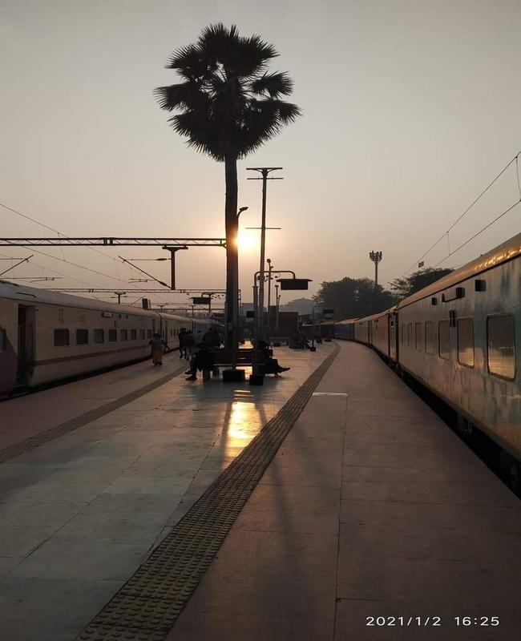
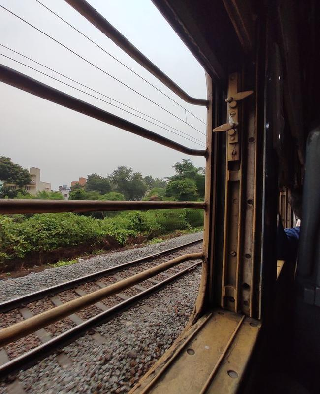
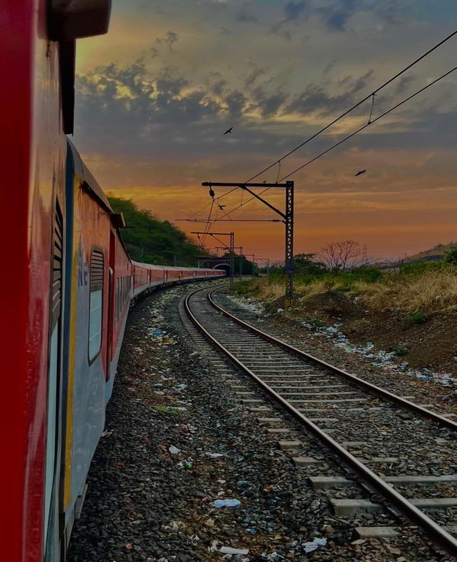

A Middle-Class Man’s Journey with Indian Railways
Last Updated: April 3, 2025
For a middle-class Indian, train journeys are more than just a way to travel—they are an experience filled with memories, stories, and emotions. From the rhythmic chugging of the engine to the hawkers selling chai and samosas, every trip by train is a journey within a journey.
Affordable and Efficient Travel
Indian Railways is the lifeline of the country, connecting villages, towns, and cities at a price that’s friendly to every pocket. Whether it’s a long-distance sleeper train or a short journey on a local passenger train, the experience remains unique.
Scenes from a Train Window
One of the most beautiful parts of train travel is watching India unfold through the window. Early mornings bring misty fields, afternoons showcase bustling small-town stations, and evenings are marked by golden sunsets over rivers and mountains. Every station has its own charm, and the changing landscapes make the journey magical.



People, Conversations, and Connections
Trains in India are not just about travel; they are about people. Strangers become friends over a cup of tea, debates on cricket or politics are common, and shared meals bring a sense of family among co-passengers. I have had some of the most meaningful conversations with people I met for just a few hours but will remember for a lifetime.
Memorable Train Experiences
- Night Journeys in Sleeper Class – Feeling the cool night air while lying on an upper berth, listening to the distant sounds of the railway tracks.
- Station Food Delights – Trying different foods like vada pav in Mumbai, poori sabzi in North India, or hot tea served in clay cups.
- Unreserved Class Adventures – Squeezing into a crowded general compartment, standing near the door with the wind hitting your face, feeling the thrill of adventure.
- Long-Haul Train Rides – Spending 24+ hours in a train, making friends, reading books, and feeling disconnected from the world.
Why I Love Indian Railways
For me, trains are not just about reaching a destination—they are about the journey itself. It’s about watching people rush in at stations, about vendors selling peanuts and coffee, about the smell of iron mixed with the cool breeze of night travel.
As a middle-class Indian, train travel is not just convenient; it is where we feel at home, where we share laughter, stories, and moments that make us cherish the beauty of simple travel.